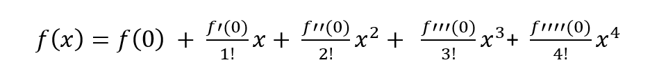

DERET MacLaurin¶
DERET MacLaurin adalah Suatu fungsi f(x) yang memiliki turunan 


Atau bisa dinyatakan dengan:

Perhitungan e^2x¶
Dalam banyak masalah terapan, pilihan basis yang mudah digunakan adalah bilangan irasional e = 2,718281828...
Bilangan ini disebut basis natural. Fungsi f(x) = ex disebut sebagai fungsi eksponensial natural. Gambar 7 menunjukkan grafik fungsi ini. Pastikan bahwa dalam melihat fungsi eksponensial f(x) = ex, e adalah konstanta 2,718281828…, sedangkan x adalah variabel.
f(x)=exf(x)=ex
f'(x) = ex 
f”(x) = ex
f”'(x) = ex
Untuk bilangan e2xe2x maka:


jadi, kesimpulannya adalah sebagai berikut:


ketika nilai x diganti dengan 4 maka hasilnya adalah 296,99.
Listing Program¶
Untuk membuat program agar dapat mengekspansi bilangan e^2x dengan nilai x=4 hingga nilai menjadi kurang dari 0,001 bisa dibuat dengan listing program sebagai berikut.
import math
x=4
cek =1
a = 0
b=1
iter = 1
while cek>0.001:
f_x = 0
f_y = 0
for i in range(a):
f_x += (2**i)*x**i/math.factorial(i)
for j in range(b):
f_y += (2**j)*x**j/math.factorial(j)
cek = f_y-f_x
a+=1
b+=1
print("iterasi ke-",iter,"= ",cek)
iter+=1
output:
iterasi ke- 1 = 1.0
iterasi ke- 2 = 8.0
iterasi ke- 3 = 32.0
iterasi ke- 4 = 85.33333333333333
iterasi ke- 5 = 170.66666666666669
iterasi ke- 6 = 273.0666666666666
iterasi ke- 7 = 364.08888888888896
iterasi ke- 8 = 416.1015873015872
iterasi ke- 9 = 416.1015873015872
iterasi ke- 10 = 369.8680776014112
iterasi ke- 11 = 295.89446208112895
iterasi ke- 12 = 215.195972422639
iterasi ke- 13 = 143.46398161509296
iterasi ke- 14 = 88.28552714774924
iterasi ke- 15 = 50.448872655856576
iterasi ke- 16 = 26.90606541645684
iterasi ke- 17 = 13.45303270822842
iterasi ke- 18 = 6.330838921519444
iterasi ke- 19 = 2.8137061873417224
iterasi ke- 20 = 1.184718394670199
iterasi ke- 21 = 0.47388735786807956
iterasi ke- 22 = 0.18052851728316455
iterasi ke- 23 = 0.06564673355751438
iterasi ke- 24 = 0.022833646454728296
iterasi ke- 25 = 0.0076112154847578495
iterasi ke- 26 = 0.0024355889549951826
iterasi ke- 27 = 0.0007494119863622473